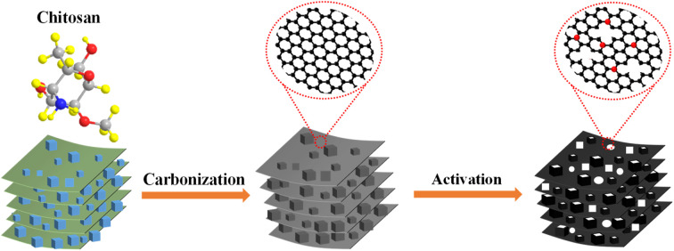
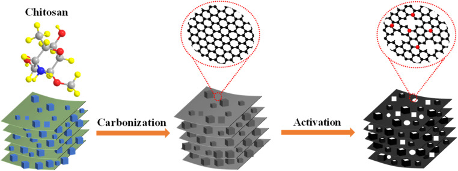
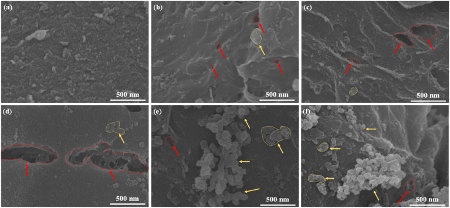
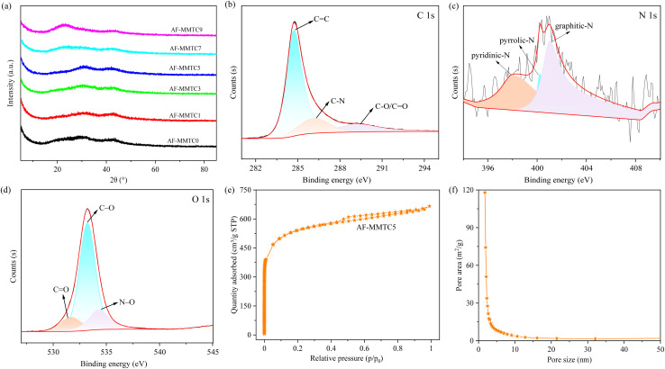
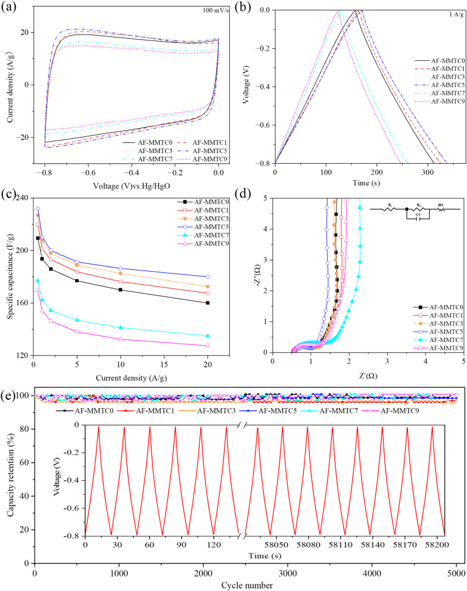
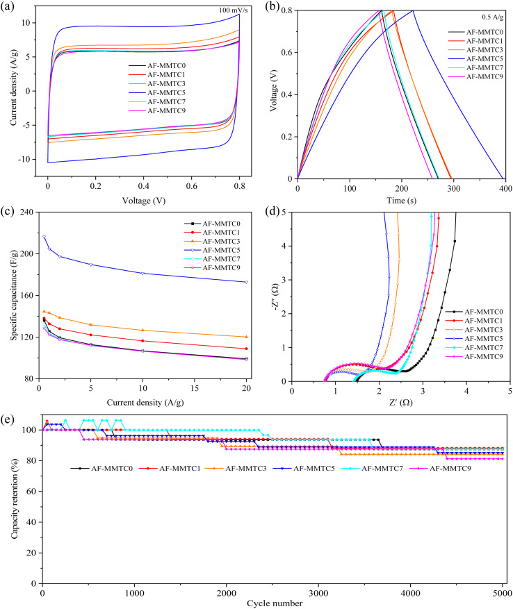

本地阅读版，依据出版社提交至PMC的原始JATS XML整理，供核对正文、图注、表格和原图。原始main.xml完整保留；此页不是出版社版式PDF。所有数字与正文冲突均保留原文，未修正或推算。实验准入状态见逐篇审核表。
Heteroatom-doped hierarchical porous carbon (AF-MMTC) was prepared with hard template and salt template dual templating agents, and the effects of salt template additions on its micro-morphology, pore structure, specific surface area and electrochemical properties were investigated. The salt template not only acts as a template, but also plays the role of a pore-making agent. AF-MMTC5 has a high specific surface area of 1772 m2 g−1, a 41% microporous content and 1.8 at% nitrogen content. The electrochemical test results show that the specific capacitance of AF-MMTC5 is 231.9 F g−1 (0.5 A g−1) in the three-electrode system, and the capacity retention can reach 98.5% after 5000 cycles; in the two-electrode system, the specific capacitance of AF-MMTC5 can reach 216.3 F g−1 when the current density is 0.5 A g−1, and the specific capacitance can still reach 172.2 F g−1 when the current density is increased to 20 A g−1. AF-MMTC5 represents the highest energy density of 4.81 W h kg−1 at the power density of 50 W kg−1. And the capacity retention rates of AF-MMTC5 is 85.1%. The good electrochemical properties of AF-MMTC5 indicate that it has great potential for application in supercapacitor electrode materials. In addition, the results provide useful information for the preparation of hierarchical porous carbon with high specific surface area.
Heteroatom-doped hierarchical porous carbon (AF-MMTC) was prepared with hard template and salt template dual templating agents, and the salt template and the hard template synergistically construct pore structures at different scales.

Porous carbon materials are widely used in many fields such as supercapacitor electrodes, CO2 solid adsorbents, phase change materials, wastewater adsorption, electromagnetic wave absorption and so on due to their high specific surface area, excellent chemical/thermal stability, developed pore structure and low cost.1–3 Thanks to its adjustable pore structure, reasonable pore size distribution and hierarchical porous structure, porous carbon has great advantages in the application of electrode materials for double electric layer capacitors.4–6 In the energy storage process of double layer capacitors, different pore sizes play different roles, in which micropores (<2 nm) are the main part contributing to the active site and the specific capacitance of the double layer, mesopores (2–50 nm) mainly play a role in providing convenient channels for the diffusion and transport of electrolyte ions, and macropores (>50 nm) act as the “reservoir” for the electrolyte. The joint collaboration of micropores, mesopores and macropores guarantees the excellent electrochemical performance of porous carbon,7–9 so the hierarchical porous structure with micropores, mesopores and macropores and the reasonable distribution of the three kinds of pore diameters are the key factors affecting the electrochemical performance of carbon materials.10,11
The current method for synthesizing hierarchical porous carbon is mainly activation, but the activation method cannot control the reasonable pore size distribution of carbon materials.12–14 The use of the template method can realize the precise regulation of the pore size of template carbon materials, but faces the problem of more single pore size,15 so the selection of two templates with different particle sizes as a double template to synthesize the hierarchical porous structure of porous carbon is a simple and effective method. Among them, the hard template method has the advantages of controllable morphology and adjustable pore size, while the hard template also acts as a pore-making agent.16,17 The salt template method is characterized by the ease of template removal, wide range of sources and low price, in addition, Na, K, Ca and Mg in the stabilized salt templates can be used as pore-making agents and activating agents.18,19 Combining the advantages of hard and salt templates, therefore, the above mentioned dual template agents were selected for the preparation of hierarchical porous carbon. In addition, purely hierarchical porous carbon materials have hydrophobic surfaces and low chemical reactivity, which are drawbacks that limit their electrochemical performance. Doping of carbon materials using nonmetallic heteroatoms such as N, S, O, and B can improve the surface wettability and chemical reaction activity of carbon materials, as well as enhance the electrical conductivity and contribute additional active sites, pseudo-capacitance, thus improving the electrochemical performance of hierarchical porous carbon materials.20–22
In this study, heteroatom-doped hierarchical porous carbon was prepared by freeze-drying supplemented with high-temperature carbonization using cetyltrimethylammonium bromide (CTAB)-modified montmorillonite as the hard template, potassium chloride as the salt template, chitosan as the carbon source, ammonium phosphate as the nitrogen source, and potassium hydroxide as the activator. Among them, the hard template contributes a two-dimensional layer morphology, while the salt template is distributed on the surface of the layer carbon to form small particle size flakes, and the salt template and the hard template synergistically construct pore structures at different scales. In addition, the salt templates not only act as templates, but also play the role of pore-formers, which form pore channels in the carbon layer. Moreover, N heteroatoms are introduced into the carbon material, which can significantly improve the electrical conductivity and wettability of the carbon material. The coordinated effects of hierarchical porous structure and heteroatom doping make the AF-MMTC5 exhibits excellent electrochemical properties. AF-MMTC5 shows a specific capacitance of 231.9 F g−1 and 216.3 F g−1 at 0.5 A g−1 in three-electrode and two-electrode systems, respectively. In addition, AF-MMTC5 represents the highest energy density of 4.81 W h kg−1 at the power density of 50 W kg−1. The good electrochemical properties of AF-MMTC5 indicate that it has great potential for application in supercapacitor electrode materials.
Cetyltrimethylammonium bromide (CTAB), chitosan [(C6H11NO4)n], potassium chloride (KCl), hydrofluoric acid (HF), and anhydrous ethanol (C2H6O), analytically pure, Sinopharm Chemical Reagent Co. Ltd. Montmorillonite (MMT), Zhejiang Fenghong New Material. Potassium hydroxide (KOH), analytically pure, Tianjin Zhiyuan Chemical Reagent Co Ltd. Ammonium phosphate trihydrate [(NH4)3PO4·3H2O], analytically pure and hydrochloric acid (mass fraction 37%), West Hazel Science Co. Ltd. N-Methylpyrrolidone (NMP, 99.89%), Xilong Science Co., Ltd. Polyvinylidene fluoride (PVDF, 99.95%), conductive agent (acetylene black, 99.95%), polytetrafluoroethylene emulsion (PTFE, 60 wt%), 2032 button battery shell, glass fibre separator, cyber electrochemical materials network.
0.5 g of montmorillonite (MMT) and 0.05 g of CTAB were dispersed in 20 mL deionized water, stirred for 30 min, ultrasonicated for 1 h, and the lower layer of precipitate was collected after centrifugation and washed by filtration with deionized water for 3–4 times, and then placed in the oven to be dried overnight to obtain modified montmorillonite.
Modified montmorillonite was dispersed in 10 mL of deionized water, 0.5 g of chitosan, 0.5 g of ammonium phosphate, and a certain amount of potassium chloride (KCl) were added, and stirred for 5–10 min. The resulting mixture was placed in a freeze dryer to freeze dry. The dried sample was ground into powder in a mortar, put into a tube furnace, and heated to carbonization in a N2 atmosphere, and the temperature was raised to 800 °C and held for 2 h at a rate of 5 °C min−1. After the reaction temperature was lowered to room temperature, the template/carbon complex was placed in a 1 M HCl solution and stirred for 12 h. After being washed by filtration using deionized water, the template/carbon complex was added to a 1 M HF solution and stirred for 12 h. The template carbon material was obtained by washing with deionized water and drying at 110 °C. The template carbon and KOH (C : KOH mass ratio of 1 : 4) were dispersed in 20 mL of deionized water, stirred for 5–6 min, dried at 110 °C, put into a tube furnace, and held at 800 °C for 2 h in a N2 atmosphere, with an increase in temperature rate of 5 °C min−1. After the reaction temperature was lowered to room temperature, the samples were put into a 1 M HCl solution, and stirred for 12 h to remove unreacted potassium hydroxide and other by-products, filtered and washed with deionized water, and dried at 110 °C to obtain the final product, i.e., heteroatom-doped hierarchical porous carbon, which was prepared as shown in the schematic diagram of Fig. 1. The samples obtained with the additions of KCl in the amounts of 0, 0.5, 1.5, 2.5, 3.5, and 4.5 g were named as AF-MMTC0, AF-MMTC1, AF-MMTC3, AF-MMTC5, AF-MMTC7, and AF-MMTC9, respectively.

The field emission scanning electron microscopy (SEM, Hitachi SU8220, Japan) was used to observe the morphology of the AF-MMTCs. The phase characterization of the AF-MMTCs were conducted employing X-ray diffraction (XRD, D8 Advance, Bruker AXS GmbH, Germany). The pore structure was characterized by ASAP2020 PLUS HD88(Micrometer, USA). The elements composition was carried out with X-ray photoelectron spectroscopy (XPS, Escalab 250Xi, Thermo Scientific K-Alpha).
All electrochemical properties were tested using a CHI760E (Shanghai Chenhua, China) electrochemical workstation. In the three-electrode system, the electrolyte was 6 M KOH, and the fabricated porous carbon samples, Hg/HgO, and Pt were used as the working, reference, and counter electrodes, respectively. The electrochemical properties of the prepared samples were evaluated by cyclic voltammetry (CV, 5–200 mV s−1, −0.8 to 0 V), galvanostatic charge/discharge (GCD, 0.5–20 A g−1, −0.8 to 0 V) and AC impedance (EIS, 0.01–105 Hz). The working electrodes were prepared as follows: porous carbon, acetylene black (conductive agent) and PTFE (binder) were made into a homogeneous slurry (the solvent was ethanol solution) at a mass ratio of 8 : 1 : 1, and the slurry was coated onto a 1 × 2 cm2 nickel foam collector, placed in an oven at 110 °C for overnight drying, and pressed into a sheet at 5 MPa for 4 min to obtain the working electrodes. The mass loading of the active material was about 1.8 mg cm−2. The mass specific capacitance of the sample can be calculated from the GCD curve according to the following eqn (1):
1 C = IΔt/mΔVwhere I (A) and Δt (s) represent the discharge current and discharge time, respectively, m (g) represents the mass of active material, and ΔV (V) is the voltage window.
In the two-electrode system, 2032 coin-type symmetrical capacitor was assembled with 6 M KOH and glass fiber as the electrolyte and separator, respectively. The prepared heteroatom-doped hierarchical porous carbon, acetylene black and PVDF (mass ratio = 8 : 1 : 1) are uniformly dispersed in NMP and grinded to obtain a viscous slurry. It was coated on graphite paper, vacuum-dried at 100 °C for 2 h to obtain the working electrode.
The mass specific capacitance of the sample in the two-electrode system was calculated according to eqn (2):
2 C = 4IΔt/mΔVwhere I (A) and Δt (s) are the discharge current and discharge time, respectively, m (g) is the total mass of the active material at the two electrodes, and ΔV (V) is the voltage window. The energy density (Et, W h kg−1) and power density (Pt, W kg−1) of the symmetrical supercapacitor were calculated by eqn (3) and (4), respectively:
3 Et = Ct(ΔU)2/2 × 3.64 Pt = Et × 3600/Δtwhere Ct (F g−1) is the specific capacitance of the total symmetrical supercapacitor, ΔU(v) is the voltage window excluding the IR drop, and Δt (s) is the discharge time.
SEM images of AF-MMTCs are shown in Fig. 2, which shows that the surface morphology of AF-MMTC0 prepared without the addition of KCl salt templates is relatively rough, but there is no appearance of pores (Fig. 2a), and the morphology of AF-MMTC1–9 obtained with different KCl salt template additions is shown in Fig. 2b–f. It can be seen that in addition to the flake structure provided by the montmorillonite hard template, small nanoflake morphology appears on the flake structure, which is mainly contributed by the KCl salt template; in addition to this, pore structures with different pore sizes appear on the surfaces of AF-MMTC1–9 compared with AF-MMTC0, which is mainly due to the fact that the K in KCl can act as an activator and react with C to etch and create pores. The appearance of a large number of pore structures can provide abundant active sites for the adsorption and desorption of electrolyte ions, as well as convenient channels for the rapid diffusion and transport of electrolyte ions to further enhance the electrochemical performance.

The XRD patterns of the prepared AF-MMTCs samples are given in Fig. 3a, where a broad slow peak appears at 23–30°, which corresponds to the (002) crystallographic plane of graphite, and a broad slow peak also appears near 43°, which corresponds to the (100) crystallographic plane of graphite, and at the same time both of them exhibit amorphous carbon characteristics.23 In addition, no other diffraction peaks appear in the XRD pattern except the two characteristic diffraction peaks of graphite, indicating that the hard and salt templates have been completely removed from the AF-MMTCs samples and no other impurities are generated. In order to analyze the element composition in the AF-MMTC5 samples, XPS tests were performed, as shown in Fig. S1,† and in the total spectrum, C 1s (58.1 at%), N 1s (1.8 at%), and O 1s (40.1 at%) diffraction peaks appeared near 284.2, 400.5, and 532.3 eV,24 suggesting that the carbonization process has achieved the in situ heteroatom. C 1s spectra could be fitted into C–C (284.8 eV), C–N (286.1 eV), and C <svg xmlns="http://www.w3.org/2000/svg" version="1.0" width="13.200000pt" height="16.000000pt" viewBox="0 0 13.200000 16.000000" preserveAspectRatio="xMidYMid meet"><metadata> Created by potrace 1.16, written by Peter Selinger 2001-2019 </metadata><g transform="translate(1.000000,15.000000) scale(0.017500,-0.017500)" fill="currentColor" stroke="none"><path d="M0 440 l0 -40 320 0 320 0 0 40 0 40 -320 0 -320 0 0 -40z M0 280 l0 -40 320 0 320 0 0 40 0 40 -320 0 -320 0 0 -40z"/></g></svg> O/C <svg xmlns="http://www.w3.org/2000/svg" version="1.0" width="13.200000pt" height="16.000000pt" viewBox="0 0 13.200000 16.000000" preserveAspectRatio="xMidYMid meet"><metadata> Created by potrace 1.16, written by Peter Selinger 2001-2019 </metadata><g transform="translate(1.000000,15.000000) scale(0.017500,-0.017500)" fill="currentColor" stroke="none"><path d="M0 440 l0 -40 320 0 320 0 0 40 0 40 -320 0 -320 0 0 -40z M0 280 l0 -40 320 0 320 0 0 40 0 40 -320 0 -320 0 0 -40z"/></g></svg> C (289.3 eV) (Fig. 3b).25 The N 1s spectra in Fig. 3c reveals three types of nitrogen bonding at 398.01 eV, 400.2 eV, and 401.3 eV, attributing to the pyridinic-N, pyrrolic-N, and graphitic-N.26 As for O 1s in Fig. 3d, there are three peaks of C <svg xmlns="http://www.w3.org/2000/svg" version="1.0" width="13.200000pt" height="16.000000pt" viewBox="0 0 13.200000 16.000000" preserveAspectRatio="xMidYMid meet"><metadata> Created by potrace 1.16, written by Peter Selinger 2001-2019 </metadata><g transform="translate(1.000000,15.000000) scale(0.017500,-0.017500)" fill="currentColor" stroke="none"><path d="M0 440 l0 -40 320 0 320 0 0 40 0 40 -320 0 -320 0 0 -40z M0 280 l0 -40 320 0 320 0 0 40 0 40 -320 0 -320 0 0 -40z"/></g></svg> O (531.7 eV), C–O (533.2 eV), and N–O (534.27 eV) in the AF-MMTC5.27 The doping of N and O heteroatoms not only contributes to the pseudo-capacitance, but also significantly improves the wettability of the carbon material.28 Moreover, the doping of N atoms enhances the electrical conductivity of the carbon material while providing additional active sites, which significantly improves the electrochemical performance of the carbon material.9 The nitrogen adsorption and desorption curves of AF-MMTC5 are shown in Fig. 3e, which belongs to the IV type isotherm. The rapid increase of the curve at p/p0 < 0.05 indicates that AF-MMTC5 contains a large number of micropores; there is a significant H4 hysteresis loop between p/p0 = 0.5 and 0.9, which indicates that it also contains abundant mesopores; and the curve has a slight increase at p/p0 > 0.95, which indicates that it also contains a small number of macropores. Fig. 3f shows the pore size distribution of AF-MMTC5, and it can be seen that in the range of pore size < 2 nm, it exhibits large pore area, indicating that it contains abundant micropores, which is consistent with the results of the nitrogen adsorption–desorption curves; at the same time, in the range of pore sizes from 2 to 50 nm, the pore area still exists, indicating that it also contains mesopores. Both the nitrogen adsorption and desorption curves and the pore size distribution results indicate that AF-MMTC5 has a hierarchical porous structure with both micropores, mesopores and macropores, in which the micropores are the main part contributing to the capacitance of the double-layer, the mesopores mainly provide convenient channels for the diffusion and transfer of electrolyte ions, and the macropores can serve as a reservoir of the electrolyte, so that the hierarchical porous structure is of significant importance for the enhancement of electrochemical performances of porous carbon materials. Therefore, the hierarchical porous structure is important for the improvement of electrochemical performance of porous carbon materials.

The electrochemical performance of AF-MMTCs was evaluated using CV, GCD and EIS in three-electrode and two-electrode systems, respectively, and the electrolytes were all 6 M KOH. The CV curves of AF-MMTCs at different current densities in three-electrode system are shown in Fig. S2,† and the CV curves of all the samples showed a quasi-rectangle shape as the scanning rate was increased from 5 mV s−1 to 200 mV s−1, which shows good capacitive properties of the double-layer, moreover, even when the scan rate is increased to 200 mV s−1, the traits of the CV curves are still not deformed, which indicates that all the samples have good reversibility of charging and discharging. The CV curves of AF-MMTCs at a scan rate of 100 mV s−1 are given in Fig. 4a, whose integral area is positively correlated with the specific capacitance of the samples, i.e., the larger the integral area of the CV curves, the larger the specific capacitance is qualitatively indicated. From the Fig. 4a, it can be seen that the order of CV curve integral area from large to small is as follows: AF-MMTC5 > AF-MMTC3 > AF-MMTC1 > AF-MMTC0 > AF-MMTC7 > AF-MMTC9. In order to quantitatively calculate the specific capacitance of the mass of the AF-MMTCs, the GCD test was carried out, and the GCD curves under different current densities are shown in Fig. S3,† the GCD curves of all samples showed good symmetry and linearity, presenting isosceles triangles, indicating that all samples exhibited double capacitance behavior and excellent reversibility of charging and discharging. Fig. 4b demonstrates the GCD curves of AF-MMTCs at 1 A g−1. It can be seen that the order of the discharge time from longest to shortest is AF-MMTC5 > AF-MMTC3 > AF-MMTC1 > AF-MMTC0 > AF-MMTC7 > AF-MMTC9, and the integrated area of the CV curves presents consistent results. The specific capacitance calculated according to the eqn (1) based on the GCD curve is shown in Fig. 4c, which shows that the magnitude of the specific capacitance at different current densities coincides with the integral area of the CV curve and the discharge time of the GCD curve, i.e., with the increase of the KCl addition, the specific capacitance of the AF-MMTCs exhibits a law of increasing and then decreasing, which may be mainly due to the fact that in addition to the role of KCl as a salt template, also plays the role of an activator. In the electrochemical energy storage process, different pore sizes exhibit different roles, with micropores mainly contributing to the active site part, and mesopores and macropores mainly providing convenient channels for the rapid transport of electrolyte ions. When KCl is added in small amount, KCl will activate the etching to produce more micropores, thus providing abundant active sites for electrolyte ions, but when KCl is added in excess, it will cause transition etching, which makes the formed micropores connect with each other to form meso-pores or macropores, which results in the reduction of active sites, and thus affects the electrochemical performance. The EIS curve of AF-MMTCs consists of a semicircle in the high-frequency region and a straight line in the low-frequency region (Fig. 4d), with the size of the semicircle diameter representing the charge transfer resistance (Rct), the slope of the straight line representing the Warburg impedance (W1), and the intercept of the EIS curve with the x-axis representing the equivalent series resistance (Rs), the inset shows the equivalent circuit. As can be seen in Fig. 4d, the Rct of AF-MMTC0, AF-MMTC1, AF-MMTC3, AF-MMTC5, AF-MMTC7, and AF-MMTC9 is 0.99, 0.94, 0.92, 0.90, 0.96, and 1.07 Ω, respectively. And the Rs of AF-MMTC0, AF-MMTC1, AF-MMTC3, AF-MMTC5, AF-MMTC7, and AF-MMTC9 is 0.57, 0.55, 0.54, 0.53, 0.54, and 0.54 Ω, respectively. The AF-MMTCs exhibit low Rs and Rct, which is thus favorable for the transport and diffusion of the electrolyte ions through the pores in the sample. After 5000 charge/discharge cycles at 10 A g−1 to evaluate the cycling stability of the AF-MMTCs, as shown in Fig. 4e, the capacity retention of AF-MMTC0, AF-MMTC1, AF-MMTC3, AF-MMTC5, AF-MMTC7, and AF-MMTC9 after 5000 cycles was 98.8%, respectively, 97.0%, 96.9%, 98.5%, 98.0%, and 97.9%, respectively, which are all above 95%, showing excellent cycling stability. The inset of Fig. 4e shows the GCD curves at the beginning and end of 5000 charge/discharge cycles of the AF-MMTC5 sample, and it can be seen that the GCD curves of the AF-MMTC5 sample still maintain good linearity and symmetry during the long cycling process, which indicates that it has very excellent charge/discharge reversibility and cycling stability. Combined with the electrochemical performance parameters such as specific capacitance, resistance and cycling stability, the AF-MMTC5 sample has a great prospect for supercapacitor electrode material applications.

In order to test the electrochemical performance of AF-MMTCs when assembled into supercapacitor devices, the electrochemical properties of AF-MMTCs were tested under the two-electrode system. The CV curves of AF-MMTCs at different scan rates are given in Fig. S4,† and the CV curves of all the samples at all scan rates exhibit a quasi-rectangular shape with good double-layer behavior; moreover, with the scan rate increasing to 200 mV s−1, the CV curves of AF-MMTCs do not undergo any deformation, which indicates that they have an excellent reversibility of charging and discharging. The CV curves at a scan rate of 100 mV s−1 are shown in Fig. 5a, which shows that AF-MMTC5 has the largest integration area, qualitatively indicating that it has the largest specific capacitance. The GCD curves of AF-MMTCs at different current densities are shown in Fig. S5,† which exhibits linear characteristics, indicating that it is mainly a double-layer capacitive behavior, which is in agreement with the results presented by the CV curves. The GCD curves of AF-MMTCs at 0.5 A g−1 are given in Fig. 5b, where AF-MMTC5 has the longest discharge time, which quantitatively indicates that it has the largest mass specific capacitance, which is further corroborated by Fig. 5c, from which it can be seen that AF-MMTC5 has the largest specific capacitance at 0.5, 1, 2, 5, 10, and 20 A g−1, with specific capacitances of 216.3, 204.7, 197.4, 189.6, 181.2, and 172.8 F g−1, respectively. Fig. 5d exhibits the EIS curves of the AF-MMTCs, and the intercept of the curves with the x-axis represents the equivalent series resistances (Rs), and the AF-MMTC1, AF-MMTC3, AF-MMTC5, and AF -MMTC9 have similar Rs and are smaller than AF-MMTC and AF-MMTC9; the semicircle diameter in the high-frequency region represents the charge transfer resistance (Rct), and AF-MMTC5 has the smallest semicircle diameter, i.e., the smallest Rct; the straight-line slope in the low and middle frequencies represents the Warburg impedance, and AF-MMTC5 has the largest straight-line slope in the low and middle frequency regions, which indicates that it has the smallest Warburg impedance. In conclusion, combining Rs, Rct and Warburg impedance, AF-MMTC5 has the smallest resistance, which means that the electrolyte ions can diffuse and transport rapidly in the internal pores of AF-MMTC5, thus enhancing the electrochemical performance. The Ragone plot is shown in Fig. S6.† At 0.5 A g−1, AF-MMTC5 represents a high Et of 4.81 W h kg−1 at the Pt of 50 W kg−1, superior to AF-MMTC0, AF-MMTC1, AF-MMTC3, AF-MMTC7, and AF-MMTC9 with the Et of 3.02, 3.07, 3.21, 2.94 and 2.86 W h kg−1 at 50 W kg−1, respectively. In addition, the Et of AF-MMTC5 maintains at 3.84 W h kg−1, and when the Pt increases to 2000 W kg−1 at 20 A g−1. The capacity retention rates of AF-MMTC0, AF-MMTC1, AF-MMTC3, AF-MMTC5, AF-MMTC7, and AF-MMTC9 were 87.5%, 88.2%, 84.2%, 85.1%, 87.5%, and 81.2%, respectively, which were kept above 80%, showing excellent cycling stability (Fig. 5e).

A series of heteroatom-doped hierarchical porous carbon (AF-MMTCs) were prepared by using modified montmorillonite as a hard template, potassium chloride as a salt template, and chitosan as a carbon source with a dual template agent. The results showed that KCl not only played the role of salt template but also the role of activator. With the increase of KCl addition, the specific capacitance of AF-MMTCs showed an increase and then a decrease, which was mainly due to the fact that a lower KCl content would etch to produce more micropores, which contributed to the abundant active sites; however, when KCl was added in too much, it would lead to the transition of the etching that made the micropores connected with each other to form mesopores and macropores, resulting in a large reduction of active sites and thus affecting the electrochemical performance. The AF-MMTC5 obtained with appropriate KCl additions has good electrochemical performance, with a specific capacitance of 231.9 F g−1 at 0.5 A g−1, and excellent cycling stability (98.5% capacity retention after 5000 cycles). It has a specific capacitance of 216.3 F g−1 in the two-electrode system (0.5 A g−1). In conclusion, the strategy of preparing hierarchical porous carbon for supercapacitor electrode materials using dual template agents is feasible, while its high specific surface area, developed pore structure and suitable heteroatom doping have a large potential for application in gas adsorption, sewage treatment and other fields.
The data supporting the findings of this study are available within the article.
Fangfang Liu: writing – original draft, visualization, methodology, investigation, funding acquisition, formal analysis. Fenglei Zhang: methodology, investigation, data curation. Jinan Niu: writing – review & editing, supervision.
The authors declare no conflict of interest.
The authors would like to acknowledge the support from the Fundamental Research Funds for the Central Universities (2023QN1038).
Electronic supplementary information (ESI) available. See DOI: https://doi.org/10.1039/d4ra08818b
Yang X. Hu C. Chen Y. et al., Tailoring ion-accessible pores of robust nitrogen heteroatomic carbon nanoparticles for high-capacity and long-life Zn-ion storage. J. Energy Storage. 2024;104:114509. doi: 10.1016/j.est.2024.114509.
Shi T. Song Z. Lv Y. et al., Hierarchical porous carbon guided by constructing organic-inorganic interpenetrating polymer networks to facilitate performance of zinc hybrid supercapacitors. Chin. Chem. Lett. 2025;36(1):109559. doi: 10.1016/j.cclet.2024.109559.
Qin Y. Jha S. Hu C. et al., Hydrogen-bonded micelle assembly directed conjugated microporous polymers for nanospherical carbon frameworks towards dual-ion capacitors. J. Colloid Interface Sci. 2024;675:1091–1099. doi: 10.1016/j.jcis.2024.07.052.
Wei K. Zhang F. Yang Y. et al., Oxygenated N-doped porous carbon derived from ammonium alginate: Facile synthesis and superior electrochemical performance for supercapacitor. J. Energy Storage. 2022;51:104342. doi: 10.1016/j.est.2022.104342.
Li J. Zhang Z. Wang Z. et al., Low temperature graphitization and electrochemical properties of porous carbon catalyzed with bimetal Ni–Mo. Diamond Relat. Mater. 2022;123:108862. doi: 10.1016/j.diamond.2022.108862.
Pan Z. Yu S. Wang L. et al., Recent Advances in Porous Carbon Materials as Electrodes for Supercapacitors. Nanomaterials. 2023;13:13111744. doi: 10.3390/nano13111744.
Feng W. Zhang F. Wei K. et al., Controlled synthesis of porous carbons and their electrochemical performance for supercapacitors. Chem. Phys. Lett. 2022;806:140066. doi: 10.1016/j.cplett.2022.140066.
Yan B. Zheng J. Feng L. et al., Pore engineering: Structure-capacitance correlations for biomass-derived porous carbon materials. Mater. Des. 2023;229:111904. doi: 10.1016/j.matdes.2023.111904.
Zhang S. Zhang Q. Ma R. et al., Boosting the capacitive performance by constructing O, N co-doped hierarchical porous structure in carbon for supercapacitor. J. Energy Storage. 2024;82:110569. doi: 10.1016/j.est.2024.110569.
Han J. Kim K. Beneficial effect of steam on synthesis of hierarchically porous zeolite-templated carbons. Bull. Korean Chem. Soc. 2022;43(7):928–933. doi: 10.1002/bkcs.12548.
Fan Y. Fu F. Yang D. et al., Thiocyanogen-modulated N, S Co-doped lignin hierarchical porous carbons for high-performance aqueous supercapacitors. J. Colloid Interface Sci. 2024;667:147–156. doi: 10.1016/j.jcis.2024.04.099.
Qian M. Wang Z. Li Z. et al., Sol–gel assisted chemical activation for nitrogen doped porous carbon. Microporous Mesoporous Mater. 2019;286:18–24. doi: 10.1016/j.micromeso.2019.05.038.
Yang I. Jung M. Kim M.-S. et al., Physical and chemical activation mechanisms of carbon materials based on the microdomain model. J. Mater. Chem. A. 2021;9(15):9815–9825. doi: 10.1039/D1TA00765C.
Zhang X. Jian W. Zhao L. et al., Direct carbonization of sodium lignosulfonate through self-template strategies for the synthesis of porous carbons toward supercapacitor applications. Colloids Surf., A. 2022;636:128191. doi: 10.1016/j.colsurfa.2021.128191.
Pavlenko V. Khosravi H S. Żółtowska S. et al., A comprehensive review of template-assisted porous carbons: modern preparation methods and advanced applications. Mater. Sci. Eng., R. 2022;149:100682. doi: 10.1016/j.mser.2022.100682.
Asasian-Kolur N. Sharifian S. Haddadi B. et al., Ordered porous carbon preparation by hard templating approach for hydrogen adsorption application. Biomass Convers. Biorefin. 2023;14(16):18381–18416. doi: 10.1007/s13399-023-04282-x.
Xi Y. Xiao Z. Lv H. et al., Template-assisted synthesis of porous carbon derived from biomass for enhanced supercapacitor performance. Diamond Relat. Mater. 2022;128:109219. doi: 10.1016/j.diamond.2022.109219.
Chen B. Qi Z. Chen B. et al., Room-Temperature Salt Template Synthesis of Nitrogen-Doped 3D Porous Carbon for Fast Metal-Ion Storage. Angew. Chem., Int. Ed. 2024;63(1):202316116. doi: 10.1002/anie.202316116.
Sun K. Wang C. Tebyetekerwa M. et al., Electrocapacitive desalination with nitrogen-doped hierarchically structured carbon prepared using a sustainable salt-template method. Chem. Eng. J. 2022;446:137211. doi: 10.1016/j.cej.2022.137211.
Li J. Wang Y. Hu M. et al., Self-templated synthesis of boron-doped porous carbon by chemical interaction of 2LiBH4·CO2 with CO2. Chem. Eng. J. 2023;454:140205. doi: 10.1016/j.cej.2022.140205.
Kitenge V. N. Tarimo D. J. Rutavi G. et al., Influence of nitrogen and sulfur co-doped activated carbon used as electrode material in EmiFSI ionic liquid toward high-energy supercapacitors. J. Energy Storage. 2024;81:110453. doi: 10.1016/j.est.2024.110453.
Yu T. Zhang X. Gao S. et al., A sustainable solution: Conversion of distillers' grains waste into high-performance supercapacitor electrode materials for energy storage applications. Diamond Relat. Mater. 2024;146:111202. doi: 10.1016/j.diamond.2024.111202.
Li X. Sun B. Lin L. et al., Rapid preparation of P/O doped nano-porous carbon by microwave method for high-performance supercapacitors. Colloids Surf., A. 2024;689:133695. doi: 10.1016/j.colsurfa.2024.133695.
Li K. Liu Z. Ma X. et al., A combination of heteroatom doping engineering assisted by molten salt and KOH activation to obtain N and O co-doped biomass porous carbon for high performance supercapacitors. J. Alloys Compd. 2023;960:170785. doi: 10.1016/j.jallcom.2023.170785.
Gopalakrishnan A. Badhulika S. From onion skin waste to multi-heteroatom self-doped highly wrinkled porous carbon nanosheets for high-performance supercapacitor device. J. Energy Storage. 2021;38:102533. doi: 10.1016/j.est.2021.102533.
Yuan Z. Ma Y. Zhang P. et al., N-, P-, and Ni-co-doped porous carbon from poplar powder and graphene oxide composites as electrode materials for supercapacitors. Energy Fuels. 2023;37(3):2420–2430. doi: 10.1021/acs.energyfuels.2c03883.
Qie L. Chen W. Xu H. et al., Synthesis of functionalized 3D hierarchical porous carbon for high-performance supercapacitors. Energy Environ. Sci. 2013;6(8):2497–2504. doi: 10.1039/C3EE41638K.
Liu Z. Li L. Wang M. et al., 3D hierarchical porous N, O co-doped carbon derived from the waste walnut shell via one-step carbonization for high-performance supercapacitor. Electroanalysis. 2024;36(7):202400002. doi: 10.1002/elan.202400002.
The data supporting the findings of this study are available within the article.